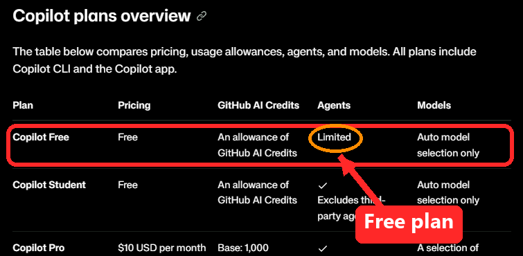
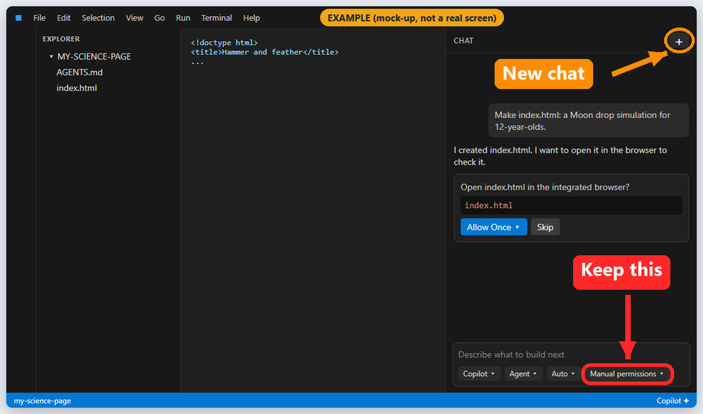
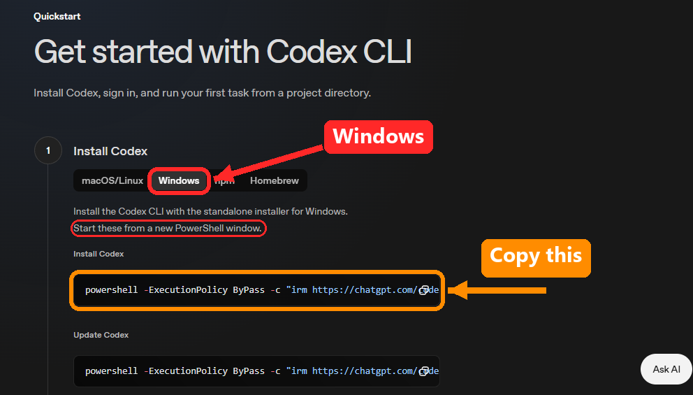

1 · Choose one app
2 · Install it and open your folder
- On your laptop, go to antigravity.google/download. Download Antigravity and install it like any app.Windows 10 or 11, or macOS 13 or later.
- Sign in with a personal Google account. When it asks about your work, choose “Science”.
- Open “Settings”, then “Account”. Turn off “Enable Telemetry”.
- Make a new, empty folder, for example Documents › my-science-page. Put nothing private in it.
- Select “New Project”, then “Add Folder”. Choose your folder and select “Create”.
- Keep the permission mode on “Default”: the agent works freely inside the folder and asks before it goes outside. Never choose “Turbo”.
- Windows: install the ChatGPT desktop app from the Microsoft Store. Mac: install the ChatGPT desktop app for macOS from OpenAI.
- Sign in with your ChatGPT account. OpenAI says Codex is included on the Free plan.
- Choose Codex from the menu.
- Make a new, empty folder, for example Documents › my-science-page. Put nothing private in it. Then open it in Codex as a local folder.
- Use the “Ask for approval” mode. Never choose “Full access”.If the agent says it can only read, check the mode below the message box.
- You need a paid Claude plan (Pro, Max, Ultra, Team or Enterprise) or a Claude Console account.
- Open a terminal. Windows: open PowerShell and paste:
irm https://claude.ai/install.ps1 | iexMac: open Terminal and paste
curl -fsSL https://claude.ai/install.sh | bash - Open a new terminal and type claude --version. It should show a version number.
- Make a new, empty folder, for example Documents › my-science-page. In the terminal, go into it and start Claude Code:
cd Documents\my-science-page claudeThe first time, it asks you to log in. Follow the steps in your browser.
- Read every permission request before you allow it. Never turn the checks off for the whole computer.
3 · Give it your rules
- Type this to the agent. It saves your standing instructions in a rules file, which the agent reads before it works. Antigravity and Codex read AGENTS.md. Claude Code reads CLAUDE.md.
Create a file called AGENTS.md in this folder with these rules: - Write in simple English for 12-year-olds. - Make one index.html file with no internet links. - Ask before you delete or move a file. - List every fact on the page with its source.
4 · Make your first simulation
- Type your request. Say who it is for, what it shows, what learners do, and what they see.
Make index.html: a science simulation for 12-year-olds that shows why a hammer and a feather land together on the Moon. Let them drop both on Earth and on the Moon. Ask them to guess first. Then list every fact on the page with its source.
- Read each permission request before you choose Allow.
- Open your folder and double-click index.html. It opens in your browser.
- Ask for one change at a time. Check every number against a trusted source.
More apps: VS Code with GitHub Copilot, and Codex CLI
These two apps also work in one folder on your laptop. VS Code is an editor with buttons. Codex CLI runs in a terminal: a window where you type commands.
A · VS Code with GitHub Copilot
- Go to code.visualstudio.com/download. Select Windows and install VS Code like any app.VS Code needs Windows 10 or 11 (64-bit), or macOS 12.0 or later.

- Open VS Code. Move the mouse over the Copilot icon in the Status Bar (the bar at the bottom) and select “Use AI Features”. Sign in with your GitHub account and follow the steps.If you have no Copilot plan, VS Code signs you up for Copilot Free.
- Know what “free” means. GitHub's plans page says Copilot Free has “limited access to a selection of Copilot features”, an allowance of AI credits, “Auto model selection only”, and agents marked “Limited”. It gives no number for agent use. Inline suggestions are “Limited to 2000 completions per month”.
To see how much you used, open the Copilot status dashboard from the Status Bar. Copilot Free is only for people who do not already get Copilot through an organization. GitHub also says verified teachers “may be eligible for free access to Copilot Pro”.

- Telemetry is on in Copilot Free. To turn it off, open VS Code Settings and set telemetry.telemetryLevel to off. You can also change it in your Copilot settings on github.com.
- Make a new, empty folder, for example Documents › my-science-page. Put nothing private in it. In VS Code select File › Open Folder and open it.If VS Code asks whether you trust the folder, select “Manage”, then “Trust”. Trust only your own new folder. For a folder from someone else, keep restricted mode: it turns the agent off.
- Press Ctrl+Alt+I to open the Chat view. Select + to start a new chat. Below the message box choose Copilot, Agent, Auto and Manual permissions.

Example picture (a mock-up, not a real screen). - Keep “Manual permissions”. It is the default: the agent can edit files in your folder, and it asks before it runs tools or uses other resources. Read each request before you choose “Allow Once”. Never choose “Allow all” or “Autopilot”, never type /yolo, and never turn on the setting chat.tools.global.autoApprove. VS Code warns that these skip confirmation “for potentially destructive actions”.
- Your rules file: Copilot reads AGENTS.md (or .github/copilot-instructions.md) in your folder. Use the AGENTS.md prompt in step 3 of this guide.Rules guide the AI, but they do not lock anything. VS Code says: “Instructions guide the model and are not an enforcement boundary.”
VS Code says file contents, terminal output and diagnostic information from your folder “are sent as context to language models and tools”. Keep personal data out of the folder.
B · Codex CLI (OpenAI)
Codex CLI is OpenAI's coding agent for the terminal. It can read files, edit them and run commands in your folder. You sign in with your ChatGPT account.
- Windows: open a new PowerShell window and paste OpenAI's install command:
powershell -ExecutionPolicy ByPass -c "irm https://chatgpt.com/codex/install.ps1 | iex"Mac: open Terminal and paste
curl -fsSL https://chatgpt.com/codex/install.sh | sh. The same page also lists an npm command; you do not need it. On Windows, OpenAI says to use the normal Windows way by default; WSL (Linux inside Windows) is only for people who need Linux tools. OpenAI recommends Windows 11; Windows 10 (version 1809 or newer) is “best effort”.
- Open a new PowerShell window. Go into your folder and start Codex:
cd Documents\my-science-page codexThe first time, choose “Sign in with ChatGPT”. A browser window opens: sign in there. OpenAI’s help page says Codex is included on Free and Go, but its pricing page lists the CLI only from Plus. If the CLI does not work on a free account, use the ChatGPT desktop app instead.
 Example picture (a mock-up, not a real screen).
Example picture (a mock-up, not a real screen). - Type /permissions to see and change the mode. Choose “Ask for approval”: OpenAI says “For most work, start with Ask for approval.” Codex then works inside your folder and asks before it edits files outside it or uses the internet. Never choose “Full access”, and never start Codex with --yolo or --dangerously-bypass-approvals-and-sandbox. OpenAI: full access “might perform unintentional destructive actions that can lead to data loss.” A new folder that is not a Git folder may start read-only: Codex can read but not write. Then use /permissions to let it work in the folder.
- Your rules file: Codex reads AGENTS.md “before doing any work”. Use the AGENTS.md prompt in step 3 of this guide, or type /init to make one.
C · Compare
| App | Needs a terminal? | Free? | Rules file |
|---|---|---|---|
| VS Code + GitHub Copilot | No. You click buttons. The agent can run commands for you after you allow them. | Yes: Copilot Free, with limits (agents “Limited”) | AGENTS.md or .github/copilot-instructions.md |
| Codex CLI | Yes: PowerShell on Windows, Terminal on Mac | Not sure: OpenAI’s pages disagree; the pricing page lists the CLI from Plus | AGENTS.md |
Sources (pages read 16 November 2026): Microsoft, code.visualstudio.com: Download, Set up GitHub Copilot in VS Code, Quickstart: Complete your first task with an agent, Manage approvals and permissions, Secure AI-assisted development, Use custom instructions, Custom instructions reference. GitHub Docs: Plans for GitHub Copilot. OpenAI, learn.chatgpt.com: Codex CLI, Authentication, Permissions, Agent approvals & security, Windows sandbox, WSL, Custom instructions with AGENTS.md; OpenAI Help Center: Using Codex with your ChatGPT plan. Screens change: if a button has moved, look for the same words nearby.
Before you start
Never put personal data in the folder or in a prompt: no student names, phone numbers, civil ID numbers or passwords. The files the agent reads are sent to the AI company.
Tips and tricks for working with AI · Only want a chat in your browser? Open an AI chat, step by step.